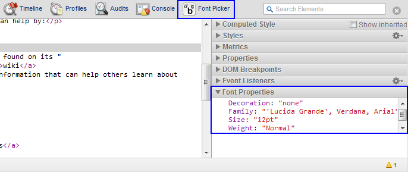

Use the experimental.webInspector.panels module to integrate your
extension into Developer Tools window UI: create your own panels, access
existing panels and add sidebars.
See WebInspector API summary for general introduction to using WebInspector API.
Each extension panel and sidebar is displayed as a separate HTML page. All
extension pages displayed in the Developer Tools window have access to all
modules in experimental.webInspector API, as well as to
chrome.extension API. Other extension APIs are not
available to the pages within Developer Tools window, but you may invoke them
by sending a request to the background page of your extension, similarly to how
it's done in the content scripts.
The following code adds a panel contained in Panel.html,
represented by FontPicker.png on the Developer Tools toolbar
and labeled as Font Picker:
webInspector.panels.create("Font Picker", "FontPicker.png", "Panel.html");
The following code adds a sidebar pane contained in
Sidebar.html and titled Font Properties to the Elements
panel, then sets its height to 8ex:
webInspector.panels.elements.createSidebarPane("Font Properties", "Sidebar.html",
function(sidebar) {
sidebar.setHeight("8ex");
}
}));
This screenshot demonstrates the effect the above examples would have on Developer Tools window: 